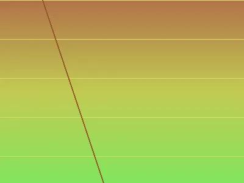
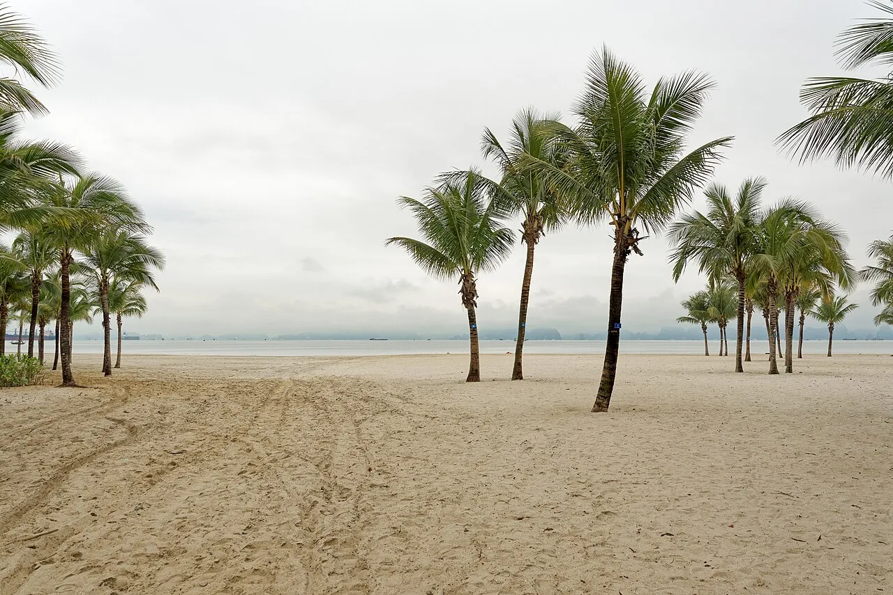
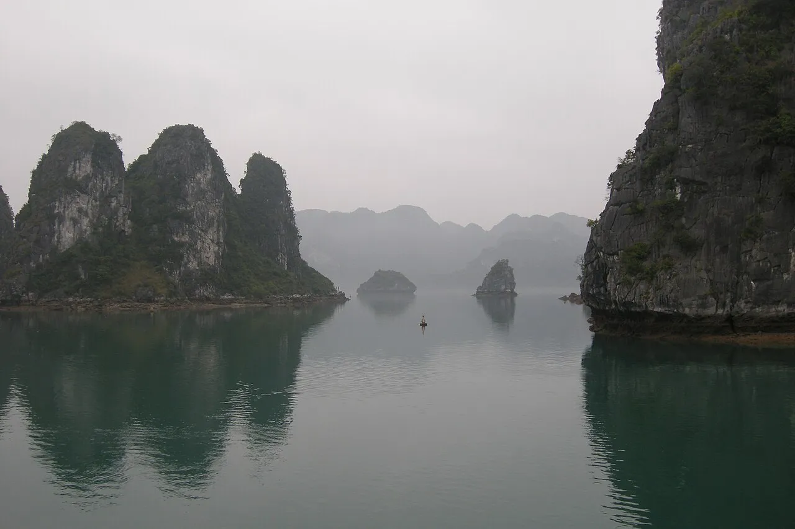
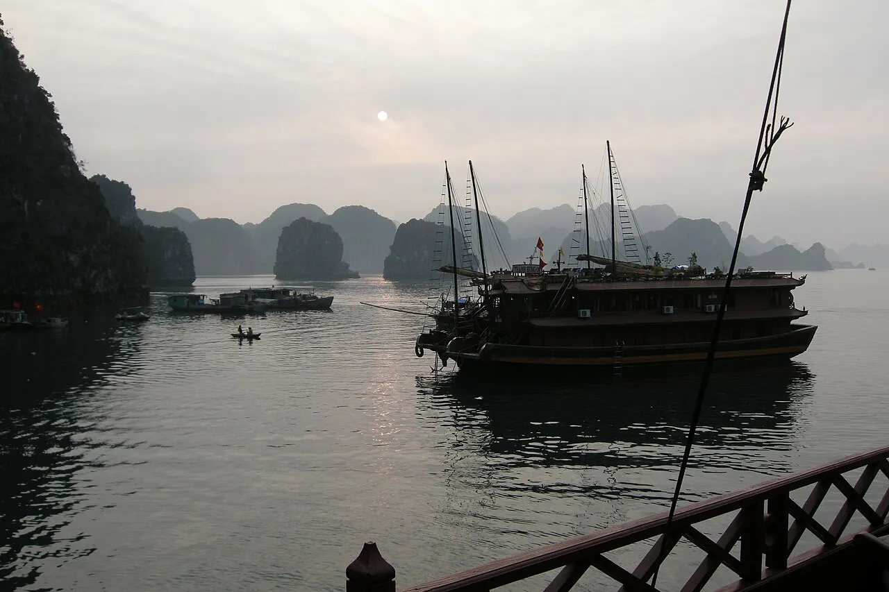
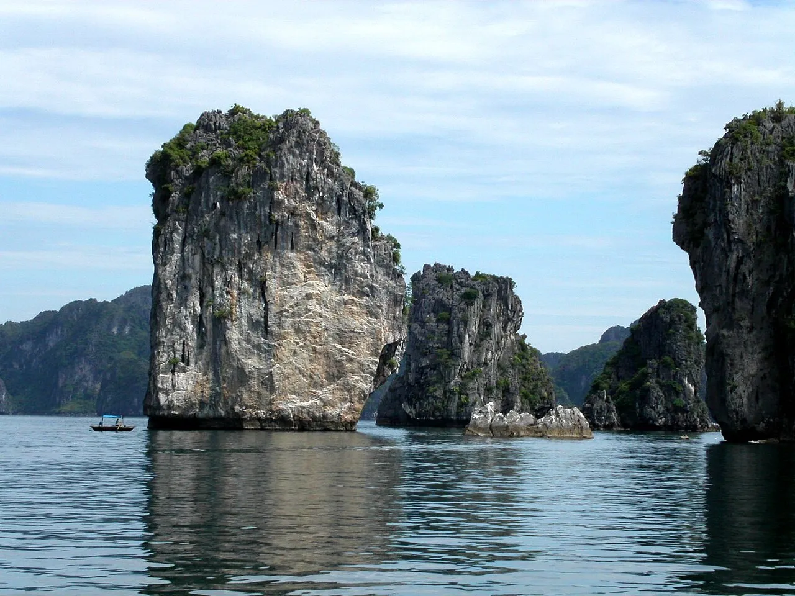

My Logbook: Where Dragons Once Descended
I stood at the bow rail of our ship at five-thirty in the morning, coffee growing cold in my hands, watching the first limestone pillars of Ha Long Bay materialize through a veil of silver mist. The air smelled of salt and damp stone, and the water was so still it looked like poured glass. No one else was on deck yet. I had this moment entirely to myself — the bay unfolding in slow revelation, each karst tower appearing like a stage curtain being drawn back, one by one, until the full scale of the landscape overwhelmed me and I had to set my cup down on the railing because my hands were shaking.
Our junk boat departed the pier at eight, a sturdy wooden vessel with red sails furled against the mast and the scent of fresh-cooked pho drifting up from the galley below. I found a seat near the bow where I could watch the karsts draw closer. The name Ha Long translates to "descending dragon," and the Vietnamese legend says a divine dragon carved these limestone towers with its tail, creating a fortress of stone and water against invaders. Science offers a different story — 500 million years of geology, tectonic shifts, and erosion sculpting the world's finest marine karst landscape. But as we threaded between pillars that rose eighty meters straight out of emerald water, draped in jungle and wreathed in cloud, both explanations felt equally plausible to me.
We reached Sung Sot Cave by mid-morning. I climbed the hundred-plus stone steps to the entrance, my calves burning, the humid air pressing against my skin like a warm cloth. However, the moment I stepped inside, the temperature dropped and the sound of the outside world vanished completely. The cave opened into a cathedral of stone — stalactites hanging like frozen chandeliers, stalagmites rising from the floor in formations that looked deliberately sculpted, the whole space illuminated by carefully placed lights that turned the rock amber and gold. I stood there for several minutes, my neck craned upward, listening to the silence broken only by the distant drip of water on stone. The scale was staggering: ten thousand square meters of underground space carved by water and time, a chamber large enough to park a fleet of buses inside and still have room to wander.
But the moment that will stay with me forever came later that morning. Our guide handed me a kayak paddle and pointed toward a dark opening in the base of a limestone cliff — the entrance to Luon Cave. I paddled into a tunnel so narrow that the rock nearly brushed my shoulders on both sides, the ceiling barely clearing my head. Water dripped onto my arms and the sound of my paddle echoed off wet stone. For perhaps thirty seconds I was enclosed in complete darkness, the hull scraping gently against submerged rock, my breath loud in my own ears. Then the tunnel opened, and I emerged into a hidden lagoon.
After kayaking, our junk boat continued to Cua Van, one of the bay's floating villages. About three hundred families live here permanently — their homes, schools, and entire lives built on platforms anchored between the karsts. We transferred to a small sampan boat and glided through the village, watching children paddle to their floating school, fishermen tending nets in the morning light, cooking smoke rising from houseboat kitchens. An elderly woman in a conical hat smiled at me from her doorstep — her doorstep being a wooden plank two inches above the waterline — and waved. I waved back, feeling the strange intimacy of witnessing a life shaped entirely by water and stone. Yet there was also something humbling about it. These families had built a community in a place most people would consider uninhabitable, and they had done it with grace, ingenuity, and a deep understanding of the water that sustained them.
Lunch aboard the junk boat was fresh seafood — prawns and squid caught that morning, steamed with ginger and lemongrass, served with rice and a dipping sauce that tasted of lime and chili. I sat on deck eating with my fingers, the breeze carrying the smell of salt and wood smoke, watching karsts slide past. The crew brought Vietnamese coffee — strong drip coffee with sweetened condensed milk poured over ice — and I drank it slowly, savoring the bitter sweetness. The cost for this entire day cruise, including lunch and kayaking, was approximately $45 per person. Even the pearl farm visit was included, where we watched artisans carefully open oyster shells and extract luminous spheres worth $20 to $200 depending on size and luster.

In the afternoon we stopped at Ti Top Island, where I climbed four hundred steps to a viewpoint that rewarded me with a panoramic sweep of the entire bay. From that height, I could see dozens of karsts stretching to the horizon, their reflections doubled in the still water below, junk boats threading between them like wooden toys on a green mirror. The beach below offered swimming in calm, clear water. I waded in up to my waist, feeling the cool water against my sun-warmed skin, and floated on my back watching clouds drift between the karst peaks above me.
Though the bay is enormous — 1,969 islands and islets across 65,650 hectares — there were moments of surprising solitude. Our captain navigated us through a passage so narrow the jungle brushed the boat's railings, and we emerged into a hidden cove where the only sound was birdsong and the gentle lap of water against hull. These quiet pockets exist throughout the bay for those willing to venture beyond the standard routes, and they reminded me that even in one of the world's most visited natural wonders, there are still corners that feel untouched.
As we sailed back toward the port in late afternoon, the sun dropped low and painted the karsts in shades of copper and gold. The water turned from emerald to amber. I watched a fishing boat silhouetted against the light, its single occupant casting a net in a gesture that looked unchanged from centuries past. My wife reached for my hand, and we stood together at the rail without speaking, watching this ancient landscape perform its evening transformation.
Looking back, what Ha Long Bay taught me was something I had forgotten in the rush of ports and itineraries and camera angles. I realized that the most profound travel moments are not the ones you capture — they are the ones that capture you. That hidden lagoon, those twenty minutes of floating in silence surrounded by stone that predates human memory, reminded me that creation still holds spaces where time pauses and wonder replaces thought. Sometimes you have to paddle through a dark tunnel, trusting what waits on the other side, to find the stillness your soul has been reaching for. I am grateful I did.
Featured Images
The Cruise Port
What you need to know before you dock.
- Terminal: Ha Long International Cruise Port — modern facility with basic amenities; tours depart from various piers. Wheelchair accessible ramps available at the main terminal building.
- Distance to Key Sites: Bay exploration via boat tours; Sung Sot Cave 12 km; Ti Top Island 8 km
- Tender: No — ships dock at pier; transfer to junk boats for bay tours
- Currency: Vietnamese Dong (VND); US Dollar accepted at tourist sites; ATMs available; credit cards increasingly common
- Language: Vietnamese; English spoken at tourist facilities and by tour guides
- Driving: Right side; car rental available but bay tours are standard; roads improving
- Best Season: October-April (dry season) for calm seas and clear skies; avoid June-August typhoon season
- Mobility Note: Sung Sot Cave requires climbing 100+ uneven steps and is not wheelchair accessible. Bay tours on larger junk boats may offer accessible boarding for those with limited mobility.
Getting Around
Ha Long Bay is primarily explored by boat, and most visitors will spend their entire port day on the water rather than navigating land-based transportation. The bay's 1,969 islands are only accessible by vessel, making your choice of boat tour the most important transportation decision of the day.
- Bay Tours: The primary way to experience Ha Long Bay. Day cruises depart from various piers and your cruise line arranges transfers from the ship. Tours typically run 6-8 hours and include transportation between sites, a seafood lunch, kayaking equipment, and guided cave visits. Prices range from $35 to $80 per person depending on the operator and inclusions. Book ahead through your cruise line or a reputable local operator for guaranteed return to the ship on time.
- Junk Boats: Wooden vessels range from basic day boats to luxury overnight cruises. Day cruises include lunch and activities. Larger vessels offer more stability and space, which matters for those with mobility concerns or sensitivity to motion.
- Taxis: Available at port for land-based exploration. Metered taxis and Grab (Vietnam's ride-share app) both operate in Ha Long City. Fare from port to city center runs approximately 50,000-80,000 VND ($2-$3). Negotiate fare in advance for non-metered cabs to avoid overcharging.
- Motorbike Rental: Available in Ha Long City for independent exploration at a cost of approximately 150,000 VND ($6) per day. International license required. Traffic can be chaotic and road conditions vary; prior riding experience strongly recommended.
- Walking: Port facilities are walkable but bay attractions require boat access. Ha Long City has a pleasant waterfront promenade suitable for evening strolls. The Sun World complex near the port offers cable car rides and an amusement park within walking distance, with admission around 500,000 VND ($20).
- Cable Car: The Queen Cable Car to Sun World crosses the bay and offers aerial views of the karsts. A round-trip ticket costs approximately 300,000 VND ($12) and the ride takes about 15 minutes each way.
Ha Long Bay Area Map
Interactive map showing cruise terminal, Sung Sot Cave, Ti Top Island, Cua Van Floating Village, and key karst formations. Click any marker for details and directions.
Excursions & Activities
How to spend your time — ship excursion vs. independent options.
Day Cruise on Junk Boat
This is the essential Ha Long Bay experience. Wooden junk boats navigate between limestone karsts, stopping at caves, islands, and kayaking spots. Most day cruises include lunch (fresh seafood), Sung Sot Cave visit, Ti Top Island stop, and kayaking. Tours typically run 6-8 hours. A ship excursion offers guaranteed return to the vessel and English-speaking guides, typically priced at $90-$130 per person. Independent operators charge $35-$80 per person but require you to manage your own timing. Book ahead during peak season (October-March) as boats fill quickly.
Sung Sot Cave (Surprise Cave)
One of Ha Long Bay's largest and most spectacular caves — massive chambers filled with stalactites and stalagmites formed over millennia. The cave sits 25 meters above sea level on Bo Hon Island. You climb 100+ steps to the entrance, then walk through two main chambers spanning 10,000 square meters. Natural rock formations illuminated by colored lights create an atmospheric experience. The scale is staggering — cathedral-like space carved by water and time. Allow 45 minutes. Included on most bay tours. Entrance fee is typically bundled with the tour price.
Luon Cave Kayaking
A low-ceiling cave passage leading to a hidden circular lagoon completely enclosed by limestone cliffs. You paddle through the narrow tunnel (duck your head) and emerge into this secret water pocket ringed by jungle-covered karst walls. Sea eagles sometimes nest on the cliffs. The lagoon is only accessible by kayak or small sampan boat at certain tides. Usually included on adventure-focused bay tours. Kayak rental independently costs around 100,000 VND ($4) if not included in your tour.
Ti Top Island
Small island with a crescent beach and a viewpoint hike. The 400-step climb (15-20 minutes) rewards with panoramic views of Ha Long Bay. The beach below offers swimming in calm, clear water. Named after Soviet cosmonaut Gherman Titov who visited with Ho Chi Minh in 1962. Popular stop on day cruises. Bring water for the climb; the view from the summit is worth the effort. Entrance fee included in bay tour tickets.
Cua Van Floating Village
Fishing village built entirely on water — homes, schools, and lives lived on floating platforms anchored between the karsts. About 300 families reside here permanently. You visit by small boat, seeing daily life up close: kids paddling to the floating school, fishermen tending nets, cooking smoke rising from houseboat kitchens. Some tours offer kayaking through the village. Respectful observation appreciated — this is a living community, not an exhibit.
Pearl Farm Visit
Several pearl farms operate in the bay, offering tours that demonstrate the cultivation process from oyster seeding to pearl harvesting. You can watch artisans extract and grade pearls, and purchase directly at farm prices ranging from $20 for small freshwater pearls to $200+ for premium saltwater specimens. Most bay cruises include a pearl farm stop. No obligation to buy.
Cat Ba Island
The largest island in the archipelago — half of it is Cat Ba National Park with rainforest, hiking trails, and endangered white-headed langur monkeys (only approximately 60 remain in the wild). Reachable by fast boat from Ha Long City (30 minutes). National park entrance fee is about 40,000 VND ($1.50). If you have time, Cat Ba provides land-based exploration to complement the water-based bay experience.
Local Food & Drink
- Fresh Seafood: Prawns, squid, crab, fish — caught that morning, grilled or steamed. Bay tours feature fresh seafood lunches. Quality is exceptional and prices reasonable at about 150,000-300,000 VND ($6-$12) per dish at waterfront restaurants.
- Cha Muc (Grilled Squid Cake): Ha Long Bay specialty — minced squid mixed with spices, formed into cakes, grilled until crispy. Served with sweet chili sauce. A portion costs about 50,000 VND ($2).
- Banh Cuon (Steamed Rice Rolls): Delicate rice sheets filled with ground pork and mushrooms, topped with fried shallots and fish sauce. Breakfast staple available all day for approximately 30,000 VND ($1.20).
- Vietnamese Coffee: Strong drip coffee (ca phe phin) with sweetened condensed milk. Hot or iced. Small cups pack serious caffeine. Price: about 20,000-40,000 VND ($0.80-$1.60).
- Pho: Vietnam's iconic noodle soup — beef or chicken broth with rice noodles, herbs, lime. Available everywhere. A bowl costs 40,000-60,000 VND ($1.60-$2.40).
- Bia Ha Noi: Local beer — light lager, refreshing, cheap. Served ice-cold with meals at about 15,000-25,000 VND ($0.60-$1) per bottle.
Depth Soundings Ashore
- Book bay tours through your cruise line or established operators — quality varies significantly. Research reviews before booking independently.
- Bring Vietnamese Dong for small purchases (water, snacks) but US Dollars accepted at most tourist sites. Change given in Dong.
- Wear non-slip shoes for cave visits — steps can be wet and slippery. Sung Sot Cave involves climbing uneven stairs that are not accessible for wheelchair users or those with significant mobility limitations.
- Pack light rain jacket even in dry season — tropical showers appear quickly and drench thoroughly before moving on.
- Sunscreen and hat essential — UV reflection off water is intense. Shade on boats is limited. Reef-safe sunscreen appreciated.
- Motion sickness medication if you are sensitive — waters usually calm but boats navigate continuously between islands.
- Bring small bills (20,000-50,000 VND) for tips and small vendors. ATMs available but boat tours do not have change for large notes.
- A camera with a good zoom lens captures karst details beautifully from the boat — dawn offers mist-shrouded karsts and soft light.
- Respect floating villages — these are homes, not attractions. Ask permission before close-up photos of people.
- Plastic bag ban in Ha Long Bay — bring reusable water bottle. Refills available on most tour boats.
Frequently Asked Questions
Q: Where do cruise ships dock?
A: Ha Long International Cruise Port. Most bay exploration happens via day cruises on junk boats, which depart from various piers. Transfers are arranged by your cruise line.
Q: What is the best way to see Ha Long Bay?
A: A day cruise on a junk boat. These tours navigate between karsts, include lunch, cave visits (Sung Sot Cave), island stops (Ti Top), and kayaking. Six to eight hours is typical. This is the essential Ha Long Bay experience.
Q: Is kayaking difficult?
A: No. Waters are calm, currents gentle, and sit-on-top kayaks are stable. Life jackets are provided. Minimal experience needed. Guides accompany groups. Most visitors find it accessible and rewarding.
Q: Can I swim in Ha Long Bay?
A: Yes. Ti Top Island and several other beaches offer swimming. Water is warm year-round and clear. Most day cruises include a swimming stop.
Q: When is the best time to visit?
A: October through April (dry season) offers calm seas, clear skies, and comfortable temperatures. Avoid June through August typhoon season. March and April can be misty but hauntingly beautiful. December through February is coolest at approximately 15-20 degrees Celsius.
Q: Are the caves accessible for visitors with limited mobility?
A: Sung Sot Cave requires climbing 100+ steps that are uneven and can be slippery. Inside paths involve more stairs. Moderate fitness required. Luon Cave is accessed by kayak only. These sites are not wheelchair accessible. Visitors with walking difficulty should discuss options with their tour operator before booking.
Photo Gallery





Image Credits
- halong-hero.webp: Wikimedia Commons (CC BY-SA)
- halong-karsts.webp: Wikimedia Commons (CC BY-SA)
- halong-junk-boat.webp: Wikimedia Commons (CC BY-SA)
- halong-cave.webp: Wikimedia Commons (CC BY-SA)
- halong-village.webp: Wikimedia Commons (CC BY-SA)
- halong-kayaking.webp: Wikimedia Commons (CC BY-SA)
- halong-sunset.webp: Wikimedia Commons (CC BY-SA)
- halong-harbor.webp: Wikimedia Commons (CC BY-SA)
- halong-island.webp: Wikimedia Commons (CC BY-SA)
- halong-fishing.webp: Wikimedia Commons (CC BY-SA)
- halong-overview.webp: Wikimedia Commons (CC BY-SA)
- halong-pearl-farm.webp: Wikimedia Commons (CC BY-SA)
Images sourced from Wikimedia Commons under Creative Commons licenses.